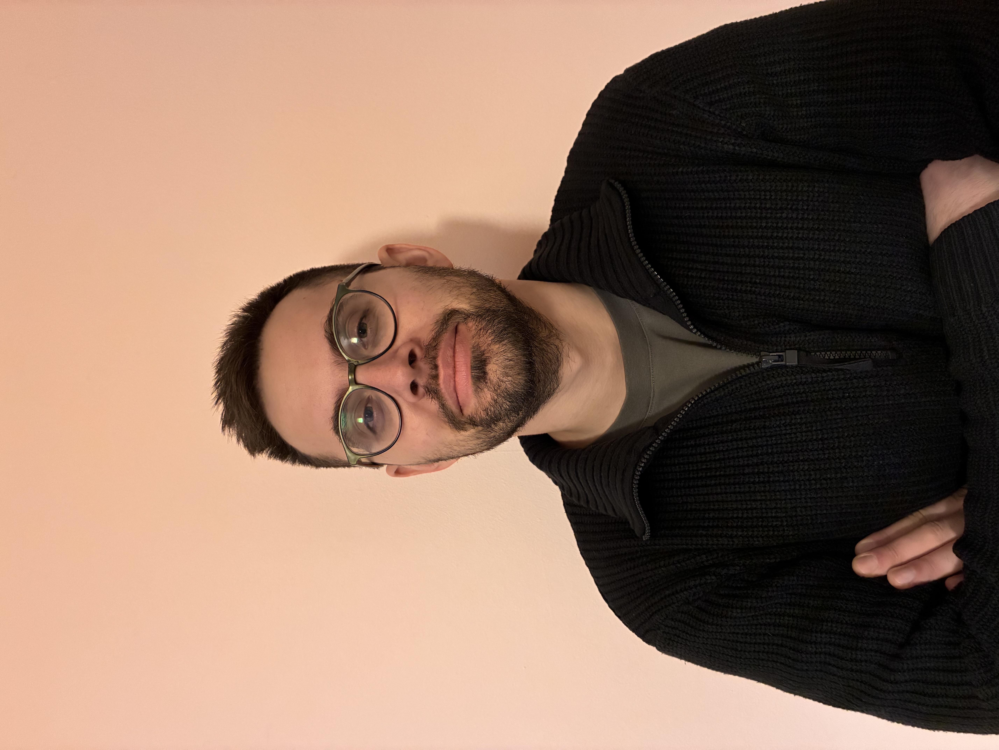

Welcome!
Mathematician · Postdoctoral Researcher
I am a mathematician working broadly in the field of differential geometry. My core research interests are centered on Lie theory and Poisson geometry, including their various higher versions, with a particular emphasis on deformation theory in these areas. More specifically, my research interests include Lie groupoids, Lie algebroids, foliations, symplectic geometry, Dirac structures, L-infinity algebras, and moduli spaces.

Short CV
Currently, I am a postdoctoral researcher at the Aristotle University of Thessaloniki, in the research group of Panagiotis Batakidis . Previously, I obtained my doctoral degree from the University of Göttingen, under the supervision of Madeleine Jotz .
Publications
Papers
1. Deformations of ideals in Lie algebras. Journal of Algebra, Vol. 713 (2027), 283–355.
Joint with Madeleine Jotz.
Preprints
1. On the Moser trick for Lie subalgebras and foliations. arXiv preprint, arXiv:2606.25848.
Theses
1. Master's Thesis: Courant algebroids, L-infinity algebras and Symplectic Geometry
2. Doctoral Dissertation: Deformations of Ideals in Lie Algebroids